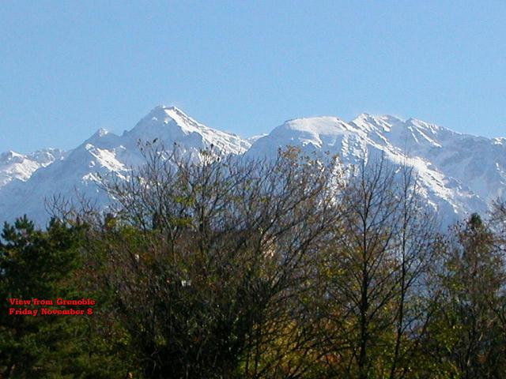

Why Grenoble?
Grenoble, France is the capital of the French departement of Isere. Politically, a departement is like a U.S. "state", although the size probably more approximates a U.S. county. Grenoble and its much larger neighbor to the west, Lyon, anchor the region (a collection of departements) of Auvergne-Rhone-Alpes. This is the southeast of France. As its name implies, it includes much of the French Alps. In fact, one of Grenoble's slogans is "Capital of the Alps."
Grenoble itself isn't high — only 241 meters (about 790′). It is in a valley carved by two rivers, the Isere and the Drac. Around it are the mountains of the Vercors (to the south), the Belledonne (to the east) and the Chartreuse (to the north).
It's the tenth largest town in France, with about 375,000 people. Lyon (100 km to the west) is the second largest city in France, with nearly 3 million inhabitants.
Grenoble is a large university and research center. It hosts 60,000 students, mostly at the campuses of the University of Grenoble.
How did we pick Grenoble? See "Why France" for why we're living in France in the first place. We joke that Grenoble for us was a compromise between Paris (which Mike would have picked) and some obscure mountain village with 200 people (which Lisa would have picked). But the more we came to know Grenoble, the more we liked it.